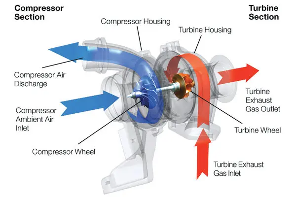

Engine Swaps
Engine Swaps are some of the most common things done on cars from this era as the origanl motors while reliable can be quite underpowered in comparison to newer models.
- common e30 swaps
- m30 b34, from 79 - 89 e28s and e24s
- m50 b25 vanos and non vanos, from 91 - 96 e36s
- m51 b25 vanos and non vanos, from 96 - 01 e36 and e46s
- m60 b40, from 92 - 96 e34s
- Vanos motors are equiped with a form variable valve timing giving the motor more air and exhuast flow at high rpm
- common e28 and e24 swaps
- m30 b35, from 91 - 96 e34s
- m60 b40, from 92 - 96 e34s
- The e28 can also fit a wide range of motors though its stock m30 b34 is more condusive for forced induction swaps or tuning
Turbo Charging
Turbo Charging is not as common as engine swaps in the world of performance upgrades though they have made a resurgence in the past 10 years, the goal of any forced induction add ons is to force air through the intake at a presure typycally called boost to force the motor to intake more air than can be achieved with natural asperation, with this increase in air the amount of fuel is also increased to create more power. the down side of this forced induction is aquasition of custom made parts and there fitment. 
Suspension
Suspension upgrades are some of the most important parts that can be fit to an aging clasic car as most have outdated and frankly worn parts many aftermarket stores have created parts with polyurothain bushing to increases stifness and overall driving capabilities. This plus a new set of springs and struts can give your car the handling of a street legal track car.
Some important parts are.
- Sway bar links and bushings
- Tie rod ends
- Control arms lower and upper
- Springs and struts
- Motor, transmision and differential mounts
Tuning
Tuning can either be one of the most important aspects of a performance upgrade or not at all, certain upgrades like forced inductions require tuning to operate normaly since a chnage to the air fuel ratio is required. some origanal motors can also benefit from tuning. luckily most 80's BMWs have motronic computers that can have new afr chips soldered onto the boards not requirings a shop to run programs for more performance.